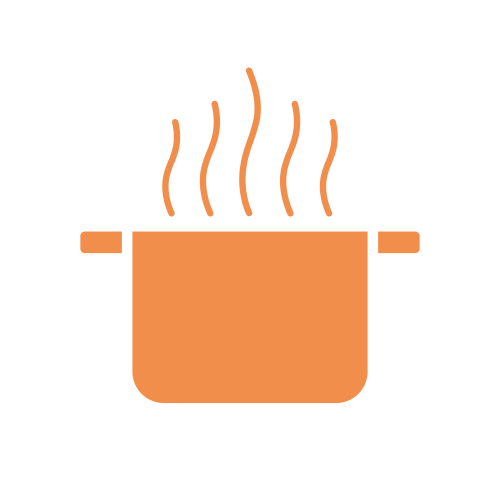
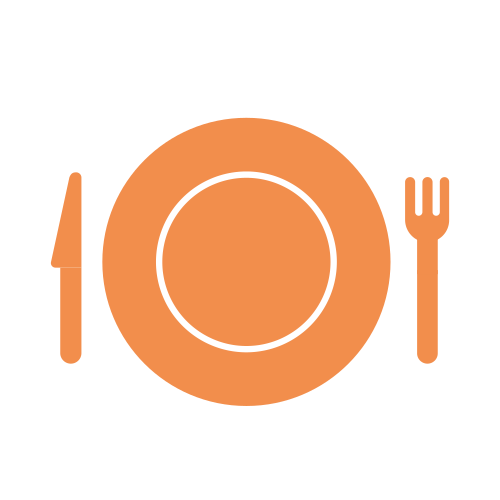

Preparation  Cooking time Rating  Serves Difficulty Pasta with homemade tomato sauce Don't let complicated recipes stand in the way of you and carbs. This easy pasta dish will make dinner stress-free, and will be delicious enough that you'll be happy to have leftovers. A great dish to save time and money!